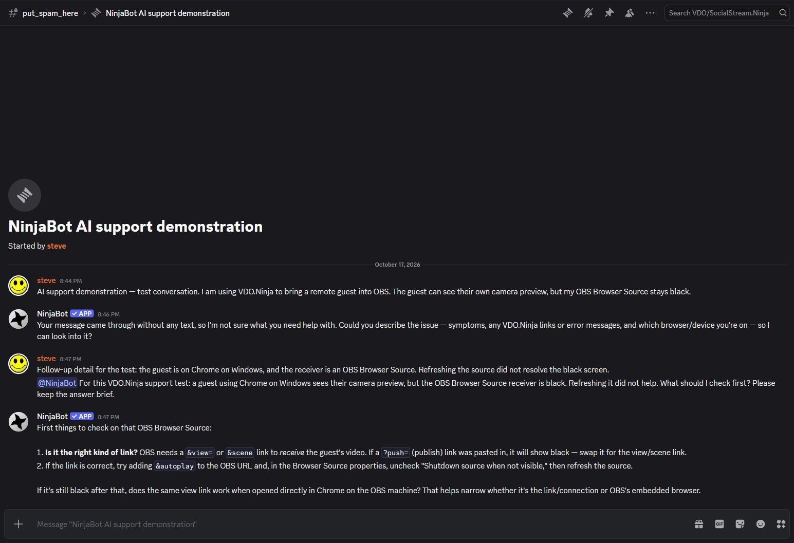
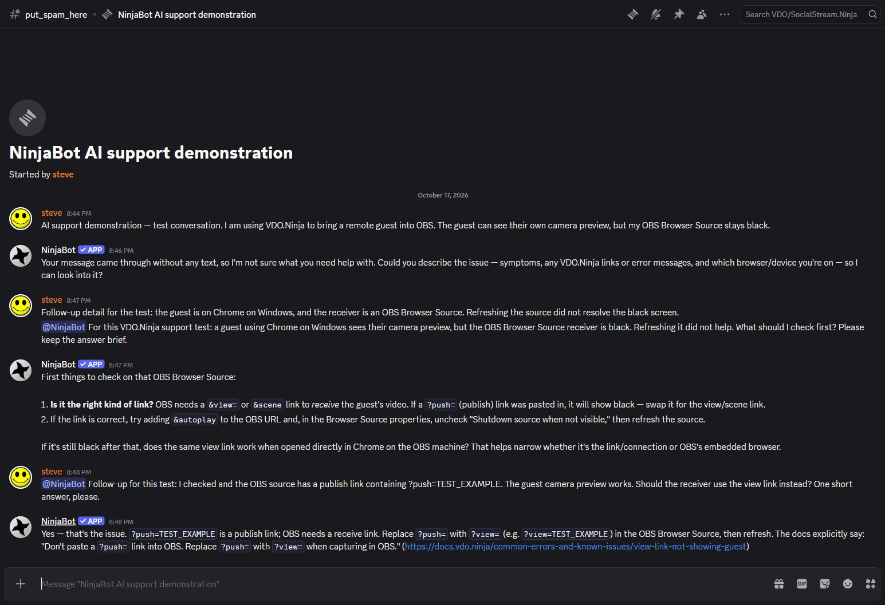

NinjaBot AI support demonstration
NinjaBot helps troubleshoot VDO.Ninja, Social Stream Ninja, and Raspberry Ninja in designated support conversations. A question can span the thread starter, later details, screenshots, attempted fixes, and replies from several participants.
Watch the bot answer in Discord
This recording shows a controlled support conversation in the community's test channel. Steve supplies an example VDO.Ninja problem and a follow-up; the deployed AI bot replies in the actual Discord interface. The example stream ID is fictional.
Download the screen recording · Open the conversation screenshot · Open the follow-up screenshot


Why the conversation requires Message Content
The bot is operating in temporary mention-and-interaction mode while Message Content access is unavailable. The screenshots show the difference between requesting help and supplying the surrounding conversation:
- The initial question is posted as an ordinary thread message. The support buttons identify the product and platform, but do not provide that message's content to the bot.
- The bot asks for the missing problem description, even though the question is visible to participants in Discord.
- Steve repeats the problem in a direct mention. The bot can then answer that invoking message and a directly mentioned follow-up.
Message Content is requested so the bot can use the existing question and relevant unmentioned follow-ups and attachments, without requiring participants to copy them into each invocation. Slash-command options, buttons, and a selected context-menu message do not supply the rest of a multi-message troubleshooting conversation.


Data handling
Working databases, attachments, and logs use encrypted storage. Raw support content expires at 28 days through hourly cleanup; useful technical knowledge is summarized separately before expiry and anonymized for retrieval. Discord message content is not used to train or fine-tune models.